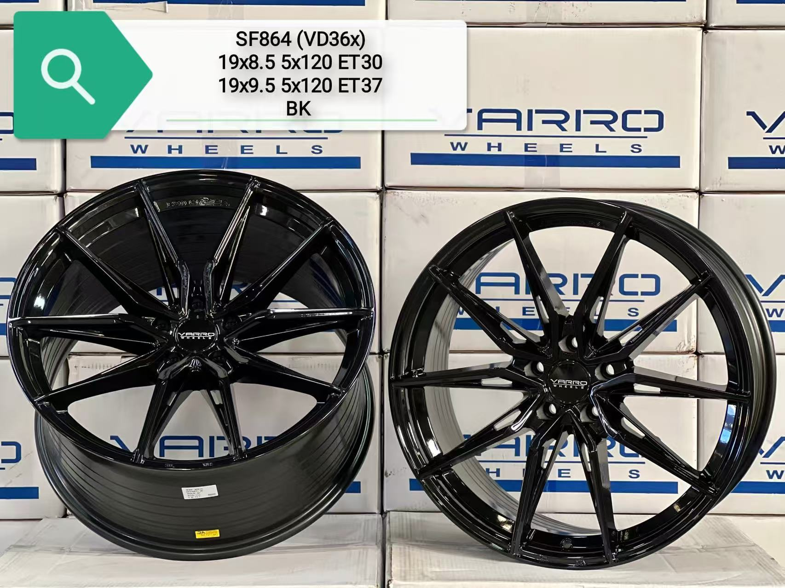

Varro VD36X (SF864) 19x8.5J / 9.5J | PCD 5x120 | ET+30 / +37 | CB72.56mm | Gloss Black (BK)

RM 4750.00
Varro Wheels VD36X (SF864) | 19" Staggered Spin Forged Sport Rim Engineered in California, USA and manufactured in Taiwan using advanced Spin Forged (Flow Forming) technology, the Varro VD36X delivers superior strength with reduced rotational weight. Featuring an aggressive split 5-spoke concave profile finished in deep Gloss Black (BK), this staggered setup is tailored for a clean, flush-to-fender stance. Specifications: • Brand / Model: Varro VD36X (SF864) • Front Size: 19 x 8.5J | Offset +30 • Rear Size: 19 x 9.5J | Offset +37 • PCD: 5 x 120 • Center Bore: 72.56mm (Direct Hub-Centric for BMW) • Finish: Gloss Black (BK) Vehicle Fitment: • BMW 3 Series: F30 / F31 / F34 GT / E90 / E92 • BMW 4 Series: F32 / F33 / F36 Gran Coupe • BMW 5 Series: F10 / F11 / F07 GT • BMW Z4 (E89) / X1 (E84) / X3 (F25) • Honda Civic Type R (FK8 / FL5) (Requires 72.56mm to 64.1mm hub rings) Additional Info: • Price listed is for 1 set of 4 pieces (2 Front + 2 Rear). • Professional installation, high-speed wheel balancing, and old rim Trade-in are available at our Klang workshop.
Klang Hock Li Tyre Services Sdn Bhd, Klang, Selangor, Malaysia.
View live product details and enquire